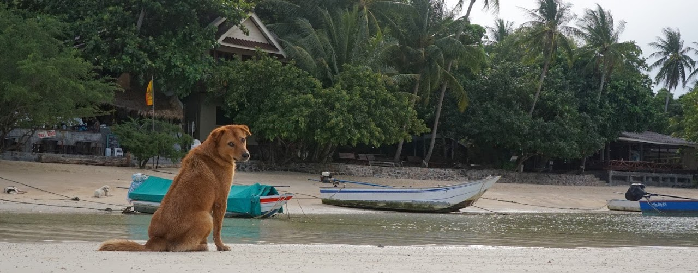

Curriculum Vitae
Short Bio

I'm currently a Business Consultant in Iconsulting. I solve business problems by converting data into information and looking for the best solution for every customer.
I've been involved on many projects about data warehousing, ETL process design, reporting and data-driven processes.
After my Ph.D. in 2018, I decided to leave my academic career out of curiosity for data science and its business applications.
Thanks to my background, I have a solid mathematical knowledge, oriented to the analysis and modeling of customers' business problems.
Download Full CV
Work Experiences
- Nov. 2018 - Present, IConsulting (Rome Office)
- Contributed to projects related to the construction of ETL and data warehousing processes, reporting, development and deployment of business solutions through machine learning algorithms and POCs.
- July 2020 - Aug. 2020, DASI - Summer Bootcamp
- RapidMiner Trainer and Challange Tutor
- Nov. 2015 - Oct. 2018, Ph.D. Researcher, Sapienza University
- Ph.D. Graduate in Mathemtical models for Engineering, Nanoscience and Electromagnetism, with a thesis on multiscale models on networks for vehicular traffic
Education
- Oct. 2013 - Oct. 2015, Sapienza, University of Rome
- Master Degree in Applied Mathematics, 110 cum Laude with a thesis on Multiscale models for vehicular traffic.
- Oct. 2014 - Mar. 2015, TUM, Munich
- Erasmus Program (Munich - TUM) and Athens Program (ParisTech - Paris).
- Oct. 2010 - Jul. 2013, Sapienza, University of Rome
- Bachelor Degree in Applied Mathematics, 110 cum Laude with a thesis on flocking dynamical models.
Certifications
- AWS Machine Learning Specialty, October 2020
- RapidMiner Certifications (7/7)
- Neo4j Professional Developer Certification - 85%
Awards
- Excellence Learning Path during Master and Bachelor Degree
- Scholarship offered by the Institut Francois to research 3 months in France (at INRIA in Sophia Antipolìs, under the supervision of Prof. Paola Goatin)
- Starting Grant for Young Researcher (2k €) offered by Sapienza University
Tech Skills
Data Analysis, Reporting, Business processing, coding (Python, R, Matlab, C++), mathematical modeling, machine learning and data science pipelines development.
Good knowledge of many softwares for Data Science, ETL and BI solutions; for example SQL, Hive, RapidMiner, SAS Data Integration, Talend, Power BI, Tableu, etc.
Speak fluently Italian and English, basic knowledge of German.